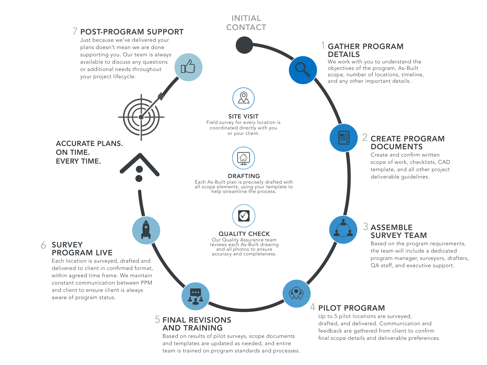

|  | Defining the research question or objective: Determine what information you want to gather, and why it is important.Designing the survey: Consider the type of survey you want to conduct (e.g. online, telephone, mail, in-person), the questions you will ask, and the response options available.Selecting the sample: Choose a representative sample of the population you want to survey.Conducting the survey: Administer the survey to your selected sample.Collecting and analyzing the data: Collect responses from the survey and analyze them in a meaningful way.Reporting and acting on the findings: Share the results of the survey with stakeholders, and use the insights gained to make informed decisions and take action if necessary.Evaluating the survey process: Review the process to identify areas for improvement and ensure that the survey results are reliable and accurate.